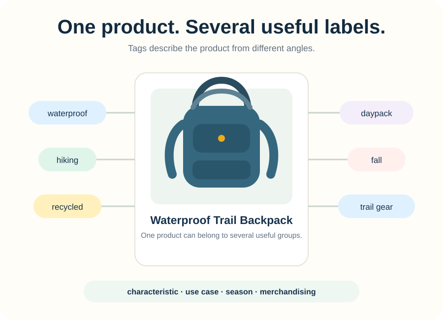
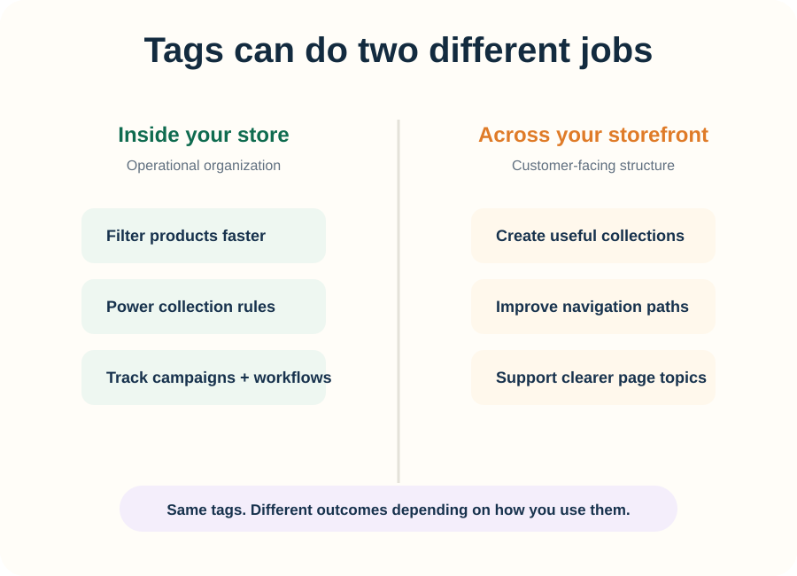
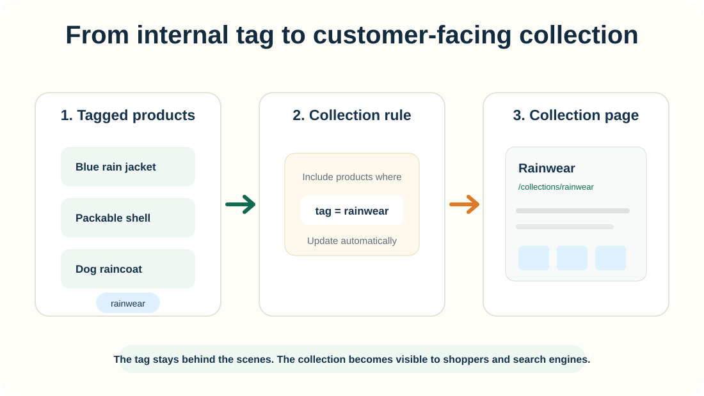

Product tags are easy to overlook because they usually live behind the scenes.
They might describe a product as waterproof, hiking, fall, or rainwear. Their first job is simple: help you keep the catalog organized.
What are product tags?
Product tags are descriptive labels attached to products in your store. They can describe materials, audiences, seasons, use cases, merchandising groups, or internal workflows.
A waterproof trail jacket, for example, could use tags such as:
Those labels can support two different kinds of work: running the catalog internally and building useful customer-facing structure.


How tags help organize your Shopify store
As your catalog grows, product names alone are not enough to tell you which items are seasonal, part of a campaign, intended for a specific audience, or supposed to appear together.
Tags give you a consistent vocabulary for those relationships.
Use tags to group products without sorting everything by hand
If several products share the tag rainwear, that can become a rule for grouping them into a collection. Add another product with the same tag later, and your organization stays consistent.

Use a small, consistent tag vocabulary
Useful tags usually fall into a few repeatable categories:
Some of those tags are useful only to you. That is fine. A tag does not need SEO value to earn its place in your store.